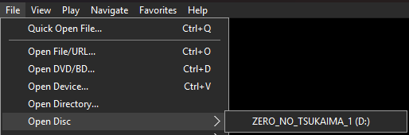
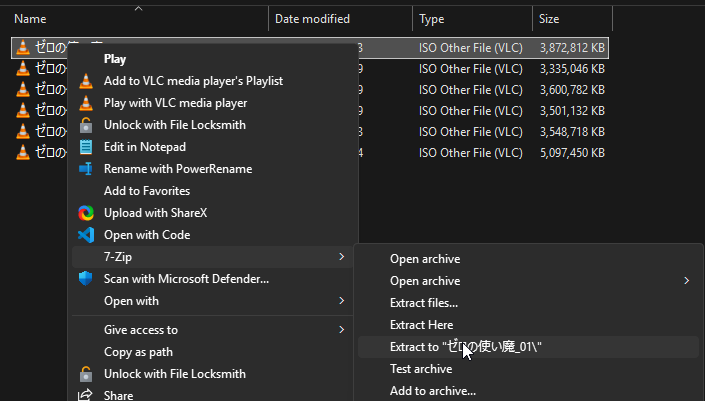
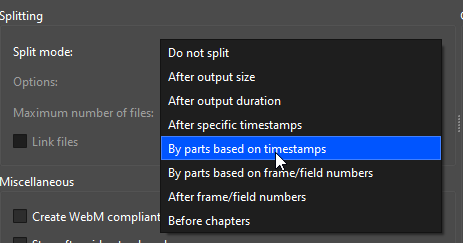
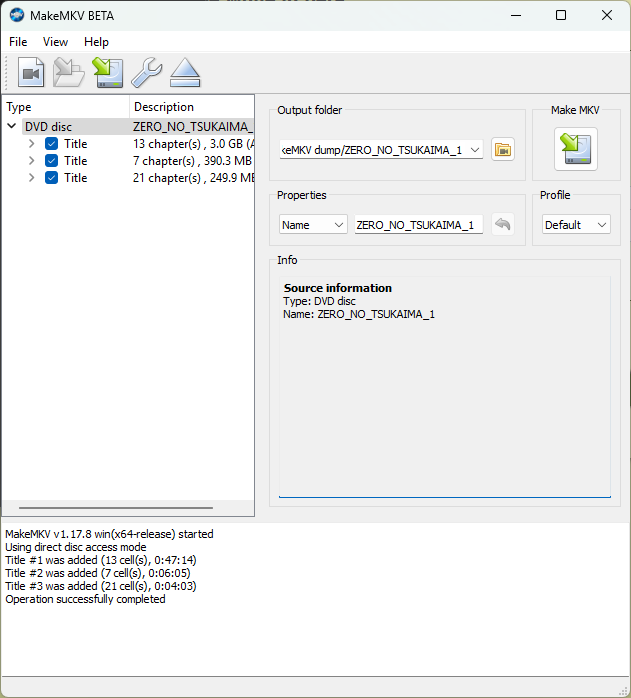
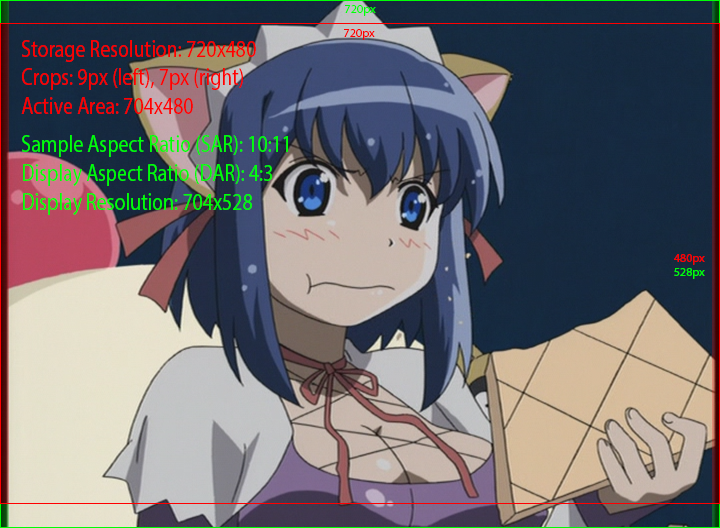

Remuxing DVDs
When working on DVDs, it helps a lot to have a clean mux of each episode ready. To do this, you will need to remux the DVDISO, and somehow split the remux into individual episodes. This guide will cover different methods to accomplish this, as well as cover some additional information that's useful if you want to release a DVD remux.
DVD Structure
There are multiple ways to remux a DVDISO. However, it's also important to understand what you are remuxing. DVDISOs are made up of the following:
- Titles: The main content units on a DVD. Each title typically contains one episode, movie, or bonus feature. These may also contain multiple episodes in one big title.
- Angles: Alternative video streams within a title, often used for different versions of the same content (such as theatrical and director's cut versions).
- Chapters: Markers within a title that allow skipping to specific points, like scene transitions or commercial break points.
Each of these elements can be important depending on what you're trying to preserve. For a basic episode remux, you'll typically want to focus on the main title and chapters. However, for a complete preservation, you might want to capture all available angles as well.
What are PGCs?
PGCs (Program Chains) are part of the DVD video structure hierarchy. At the lowest level, multiple VOBUs (Video Object Units) form a cell. One or more cells make up a program, and one or more programs form a PGC. Programs can be identified as PTTs (Parts of Title), also commonly known as chapters. A title on a DVD consists of one or more PGCs, while a menu is made up of a single PGC1.
Analyzing DVD Content
You will ideally want to know all of the above, and the most straight-forward way to find them is by using MPC-HC (note that VLC and mpv do not support all the functionality covered in this guide as of the time of writing).
What do VLC and mpv support?
On Linux, mpv has okay-ish libdvdnav support, meaning you can use scripts such as mpv-dvd-browser to navigate to different titles. Angles are still only accessible via the command line, and menus are unsupported. VLC also supports most functionalities, but has no support for different angles.
If you don't need angle/menu support, and really don't want to use MPC-HC, either of the above options may work for you. Nonetheless, this guide will only cover MPC-HC usage.
Checking video
How to view your DVD
- Mount your DVDISO
- Open MPC-HC
- Hover over the Files > Open Disc button
- Select your DVDISO

- Insert your DVD into your DVD drive
- Open MPC-HC
- Hover over the Files > Open Disc button
- Select your DVD drive
- Open MPC-HC
- Hover over the Files > Open DVD/BD button
- Navigate to the directory containing your unpacked DVDISO
- Click on the folder the DVD was unpacked into
- Click "Select folder"

You should now be able to see the DVD content.
Skipping to the menu
You can click Navigate > Title Menu to skip the trailers/warning and get straight to the menu.

You will want to take note of whether there are individual titles for each episode, or if they're all in one big title. You can check this by clicking on the titles under Navigate > Titles. If they're all in one big title, you will need to figure out how to split them. You can find the split points by referencing the chapters. These can be found on the timeline, or by using the Navigate > Chapters menu.
DVDs can contain multiple angles for certain scenes, though this is rare for anime releases. These angles can be found under Navigate > Angles. If you want to preserve multiple angles, you will need to remux each angle separately. However, for most anime DVDs, you can ignore angles entirely as they typically only contain one viewpoint.
Checking audio
You will also want to take note of the audio tracks. DVDs can contain multiple audio tracks in different formats:
- PCM (uncompressed)
- AC3 (Dolby Digital)
- DTS (Digital Theater Systems)
The remuxing methods mentioned further below will allow you to split these audio tracks alongside the video. However, special care needs to be taken with PCM tracks for certain methods, such as FFmpeg remuxing.
Why do PCM tracks need special handling?
DVD PCM audio uses big-endian byte order, while most computer audio uses little-endian. FFmpeg does not automatically handle this conversion, so PCM tracks need to be manually converted during the remuxing process.
Since PCM is already uncompressed, it's recommended to convert it to FLAC to maintain the quality while ensuring proper byte order. Alternatively, you can convert to a lossy format like AAC or Opus if file size is a concern.
You can check which audio tracks are available
and their formats in MPC-HC
under Navigate > Audio Menu
and pressing Ctrl + 3,
by using FFprobe,
or by using MediaInfo.
Remuxing Methods
Below are multiple methods to remux your DVDISO. If you are unsure if one method produced the correct result, try another method and see if the result is the same.
Remuxing methods
Version
This method requires BtbN nightly FFmpeg build! If you are using an older version, you will need to upgrade. You can find the latest BtbN nightly builds here.
Documentation
For more information on the command line arguments, see the FFmpeg documentation.
FFmpeg can be used to help split a DVDISO by Title, Angle, or Chapters.
To remux the DVDISO, you will need to use the following command based on your needs:
Demuxing with FFmpeg
Replace the following keys:
<input_file>: The path to your DVDISO<title>: The number of the title you want to remux (integer between 1 and 99)<output_file>: The path to the output file
Replace the following keys:
<input_file>: The path to your DVDISO<title>: The number of the title you want to remux (integer between 1 and 99)<chapter_start>: The number of the chapter to start at (inclusive)<chapter_end>: The number of the chapter to end at (inclusive)<output_file>: The path to the output file
Replace the following keys:
<input_file>: The path to your DVDISO<title>: The number of the title you want to remux (integer between 1 and 99)<angle>: The number of the angle you want to remux (integer between 1 and 9)<output_file>: The path to the output file
Replace the following keys:
<input_file>: The path to your DVDISO<pgc>: The number of the PGC you want to remux (integer between 1 and 99)<output_file>: The path to the output file
PCM audio
If your DVDISO has PCM audio,
you must to convert it to FLAC,
as FFmpeg does not
automatically handle this conversion.
You can do that
by adding the following parameter
after -c copy:
If you have any tracks that are not PCM,
you can prevent them from being converted
by replacing -c:a with -codec:<stream_id>,
where <stream_id> is the ID of the track
you want to convert.
You will need to add one of these
for each track
you want to convert.
Binaries
The GUI for PgcDemux is only available as a Windows binary.
If you are on Arch Linux,
the AUR has a cpgcdemux package
for CLI functionality.
PgcDemux reportedly works with Wine,
but no guarantees are made
that it will work
as expected.
PgcDemux is a tool that allows you to demux a DVDISO into individual titles and menus, as well as select angles.
The download link can be found here:
In order to use this program, you will need to have an unpacked DVDISO. Some downloads will come unpacked, but if you have a compressed ISO, you will need to unpack it first. This can be done with either WinRAR or 7-Zip.

Once you have an unpacked DVDISO,
you can open PgcDemux
and drag the VTS_XX_0.IFO file,
where "XX" can be any two digits,
into the "Input IFO" box.
Make sure to also set an output directory.
Do take note of the path name! PgcDemux does not work if there are unicode characters in the path, such as Japanese characters.

Once you have dragged the file into the program, you will see a window like the following:

There are three modes to choose from. For our purposes, we will be using the "By PGC" mode.
You can select different PGCs in the "PGC Selection" box. Under the dropdown menu, you can find invididual titles:

In most cases, these will be split into individual episodes. If that's not the case, like here, you may need to split them manually later.
Once you have selected the PGC, look at the box to the left. You will see a list of demuxing options. Set these to the following:

Once you have set the options, you can click the "Process!" button to begin the demuxing process. This will output the files into your output directory.

If the episodes are not split into individual files, you will need to split them manually. This can be done by remuxing the DVDISO using mkvtoolnix and splitting by time under the "Output" tab.

MakeMKV
MakeMKV is perhaps the easiest method to remux a DVDISO, but it's been known to create broken remuxes from time to time. Use this method at your own risk!
MakeMKV can be downloaded from the following link:
Once you have downloaded and installed MakeMKV, you will need to register it. A free key can be found here. Once you have registered it, you will need to restart the program.
Selecting titles
Click the "Open File" button and select your DVDISO. It will start processing the file, and then show you this window:

Select the titles you want to remux, give it an output folder and name, and click the button underneath "Make MKV".

Once it's done, the files will be in the output folder.

Insert your physical disc. MakeMKV will automatically detect it, and then show you this window:

Click the "Backup" button, select "Decrypt video files" (if possible), pick an output directory, and press "OK". It will now start creating a back-up of your disc.

Once it's done, follow the instructions for the ISO method.
Open MakeMKV, click the "Open files" button, and navigate to your unpacked DVDISO.

You should see a VIDEO_TS.ifo file.
Select it,
and click the "Open" button.
It should start processing the file,
and then show you this window:
Select the titles you want to remux, give it an output folder and name, and click the button underneath "Make MKV".
Once it's done, the files will be in the output folder.
Multiple Angles
As mentioned above, DVDs can contain multiple angles for certain scenes, though this is rare for anime releases. Should your DVD contain multiple angles, you may want to preserve them. There are two ways to do this:
Supported methods
This method is supported by the FFmpeg and PgcDemux methods. MakeMKV does not support this feature!
This is the most straightforward method, but will result in a larger release.
To remux each angle separately, refer to the individual method's instructions on extracting specific angles.
This explanation is incomplete!
This explanation is a stub! You can help us by expanding it.
How can I help?
- Explain how to create editions in mkvtoolnix (preferred) or ffmpeg
Player support
This feature is not supported by all players, so the safer option is to remux each angle separately.
It's possible to keep all angles in one container by making use of editions. This allows viewers to switch between angles by selecting the desired edition in their player.
Correcting the Aspect Ratio
DVDs (and later SD Blu-rays) are stored in a format known as "anamorphic video". This means that the stored video dimensions differ from the intended display dimensions. A typical NTSC DVD stores video at 720×480 pixels (a 3:2 aspect ratio), but displays it at either widescreen (16:9) or standard definition (4:3) aspect ratios.
To achieve the correct display size, DVDs make use of a Sample Aspect Ratio (SAR), also known as a Pixel Aspect Ratio (PAR). This value tells the player how much to stretch each pixel. The system was designed for CRT televisions, which had overscan, meaning they would stretch and slightly crop the edges of the image, which allowed the image to reach its intended Display Aspect Ratio (DAR).
Understanding Aspect Ratio Math
This explanation is incomplete!
This explanation is a stub! You can help us by expanding it.
How can I help?
- Write proper equations
- Explain the math in-depth
To properly handle DVD aspect ratios, we need to understand three key components:
-
Display Aspect Ratio (DAR): The final width-to-height ratio of the displayed picture.
- Widescreen content: DAR = 16:9 (~1.778:1)
- Fullscreen content: DAR = 4:3 (~1.333:1)
-
The active area of the frame.
- This represents the actual visible picture area for which the DAR is defined, intended for display on traditional CRT TVs. This area may exclude some valid picture data due to production inconsistencies. The active area dimensions are not explicitly stored as metadata, and must be derived through heuristics.
-
Sample Aspect Ratio (SAR): The ratio that defines how rectangular each sample (aka pixel) should be when displayed.
- Widescreen (DAR = 16:9): Each sample is displayed wider than it is high (e.g., by stretching horizontally or condensing vertically)
- Fullscreen (DAR = 4:3): Each sample is displayed higher than it is wide (e.g., by stretching vertically or condensing horizontally)
During the DVD era, content was typically confined to a smaller active area within the full frame. When played on CRT televisions, the combination of overscan and stretching would display this active area at the intended aspect ratio while cropping the frame edges. Modern displays lack these characteristics, so DVDs will display incorrectly unless you account for the active area and apply appropriate corrections during the remux process.
Due to the above, any DVD remux that does not properly account for SAR/DAR should be considered broken.
Heuristics
SAR values have evolved through multiple standards over time, making it challenging to identify the exact standard used for any given disc. To help narrow down the correct values, a reference table of common SAR values and their corresponding active areas is provided below2.
Reference Table
Common DVD anamorphic resolution standards
This explanation is incomplete!
This explanation is a stub! You can help us by expanding it.
How can I help?
- Write the missing display dimensions
- Write formal names for the standards where possible
- Link to papers or other sources for the standards of each value
Other standards
While other standards exist, they are extremely uncommon. If your DVD's aspect ratio values don't match any listed here, there's a high probability that something is incorrect in your analysis.
| Display Aspect Ratio | Sample Aspect Ratio/Pixel Aspect Ratio | Active Area |
|---|---|---|
| 4:3 | 4320:4739 | 710.85×486 |
| 9:10 | 720×486 | |
| 160:177 | 708×480 | |
| 10:11 | 704×480 | |
| 16:9 | 6:5 | 720×486 |
| 640:531 | 708×480 | |
| 40:33 | 704×480 |
| Display Aspect Ratio | Sample Aspect Ratio/Pixel Aspect Ratio | Active Area |
|---|---|---|
| 4:3 | 128:117 | 702×576 |
| 1132:1035 | 690×566 |
NTSC to PAL conversions
When working with DVDs that have been converted between NTSC and PAL formats, the standard aspect ratio values may not apply.
For these cases:
- First determine and correct the SAR values of the original format
- Analyze how the conversion process transformed the video
- Adjust your settings to match the original content's intended display
Determining accurate SAR values
Square pixels
These methods will only work if you are using a frame server or are otherwise viewing the direct output of a DVD decoder. This is because the frames will be displayed as its storage as square pixels (720×480, SAR 1:1).
All the frames given as examples are shown as square pixels, and the end result should look like the video would be displayed on a CRT monitor.
The following methods can be used to help determine the correct SAR values. Ideally, you should cross-reference the results of as many of these methods as possible to derive the most accurate SAR values.
SAR heuristic methods
NTSC Active Area Standards
NTSC has two common active area standards that are very similar:
- 710.85×486 (typically from analog transfers)
- 704×480 (more common in digital sources)
While the faded columns method below can help identify the active area, additional analysis may be needed to definitively determine which standard is being used.
One way to determine the active area is by looking for faded columns on the edges of the frame. These faded borders are intentionally added to mark the boundaries of the active picture area.

To get the active area width:
- Identify the fade width on the left and right sides (ignoring the top and bottom)
- Subtract both fades from the total frame width
The easiest way to get the fade width is to use vspreview to display the frame. You can immediately load a video using the following terminal command:
This will open the video in the vspreview window. You can then navigate to the right side of the window and click on "Misc". This will open a toolbar where you can crop the frame on each side. Crop the left and right sides until the faded columns are no longer visible.

For example, if you have:
- Total frame width: 720 pixels
- Left fade: 9 pixels
- Right fade: 7 pixels
The active area width would be:
720 - 9 - 7 = 704 pixels
Once you know the active area and display aspect ratio (DAR), you can determine the correct SAR using the reference table above.
In this example frame:
- Active area: 704×480 (crop 9px left, 7px right)
- DAR: 4:3
- Therefore SAR: 10:11
- Final display resolution: 704×528

Another method to determine the correct SAR is by finding objects in the frame that should be perfectly circular, like clocks, wheels, or logos.
The process is straightforward:
- Find a frame with an object that should be a perfect circle
- In an image editor, overlay a perfect circle on top of the object
- Test different standard SAR values until the object matches the overlay

The image above demonstrates a perfect match using a SAR of 6:5, which corresponds to a 720×486 active area. When the overlay aligns perfectly with the object, you've found the correct SAR.
Another approach is to compare text or studio logos against reference images. Many studio logos can be found online in their original square pixel form, which makes them useful reference points.
The process is similar to the circle method, but uses a studio logo or text as the reference instead of a circle. You overlay the reference logo on top of the frame and adjust the SAR until they match perfectly.
In this example, matching the logo gave us a SAR of 4320:4739 (equivalent to a 710.85×486 active area). This level of precision would be difficult to achieve using just the faded column method.
Upscales are not valid references
Note that SD upscales do not qualify as valid reference sources, as they are not native square pixel sources. They had to go through the same process as you are doing now, and it's very likely that they were handled incorrectly!
If you have access to a natively square pixel source (such as a Blu-ray release), you can use it as a reference to determine the correct SAR.
This method is particularly useful for episodes that were only released on DVD when Blu-rays exist for other episodes, such as DVD-only OVAs.
The process works as follows:
- Downscale the Blu-ray to 864×486
- Crop the image to 864×480 (matching the DVD master's crop)
- Test different SAR standards until the DVD matches the Blu-ray perfectly
I have black bars at the top/bottom! Do I need to change the height?
This explanation is incomplete!
This explanation is a stub! You can help us by expanding it.
How can I help?
- Properly explain what to do with the extra black bars
The SAR's standard active area height should be the height taken into account for this calculation. This means the new height after cropping away the black bars have no impact on the calculated SAR.
These checks can all be performed using the following Vapoursynth code snippet:
Why use Vapoursynth?
Image editors are not capable of properly ensuring the active area gets stretched and cropped correctly, so we need to use a tool that can do this.
The vskernels Kernel classes
are all capable of
handling the scaling
and cropping correctly,
including proper subpixel cropping
and SAR adjustments
that are essential
for anamorphic content.
Replace the following keys:
<dar_num>with the DVD's DAR numerator (for example,16or4)<dar_den>with the DVD's DAR denominator (for example,9or3)<active_width>with the active area width (for example,708)<active_height>with the active area height (for example,480)
Once you've determined the correct SAR values, you can print out the new display dimensions by printing the following values at the end of the script:
Understanding SAR calculations and display dimensions
The formula multiplies the SAR by the stored frame's width/height ratio to calculate the intended display ratio.
For example, using a 720×480 NTSC DVD with a SAR of 4320:4739:
While this could also be expressed as ~790x480, keeping it as a reduced integer fraction like 6480:4739 is preferable, since players treat these values as a ratio rather than actual final dimensions. Using larger integers in the ratio helps avoid rounding errors that could occur with smaller numbers.
Setting container metadata
Now that you've determined the correct SAR values, you can apply them to the video. This can be done by adding these values as metadata to the video container, such as a Matroska file.
SAR metadata
Encode metadata
When encoding anamorphic content like DVDs, proper handling of display metadata is still necessary to preserve the correct aspect ratio. The following sections explain how to do this.
However, these steps only apply if you want to keep the video in its anamorphic format. If you plan to resample the video to square pixels, you can skip ahead, as the aspect ratio should be corrected during the resampling process.
Once we've obtained the correct SAR values, we can apply them to the video. Assuming a Matroska output, we can use the following command:
Replace the following keys:
<input_file>: The path to your input file<display_width>: The new display width value obtained from the SAR calculation<display_height>: The height of the display obtained from the SAR calculation
Cropping metadata
Supported players
Container-side cropping metadata is not widely supported! Most players will not respect this metadata and still show the faded columns. Support for this should improve with time, so you should still set this metadata.
Currently supported players
The following players support this metadata as of the time of writing:
| Player | Supports it? | Notes |
|---|---|---|
| mpv | ✅ | Subtitle display may vary based on user settings |
| FFmpeg | ✅ | Interprets crop flags differently from mpv, following Matroska spec |
| VLC | ⌠| |
| MPC-HC | ⌠|
mpv and blend-subtitles
As of the time of writing,
when subtitles are blended
onto the video
differs depending on the blend-subtitles parameter.
When blend-subtitles=no,
the subtitles get rendered
after cropping.
With blend-subtitles=yes,
the subtitles get rendered
before cropping.
This means that to render subtitles correctly,
you must target blend-subtitles=yes
when authoring
(as this will ensure
the subtitles are placed
at the same location
as in other players
that do not support cropping).
Container-side cropping metadata defines which parts of the video frame should be cropped during playback. Like the SAR metadata discussed earlier, this information can be embedded into Matroska files using mkvpropedit:
Replace the following keys:
<left>: Number of pixels to crop from the left edge of the frame<right>: Number of pixels to crop from the right edge of the frame
If your disc contains black bars at the top and/or bottom of the frame, you should crop those as well using the following command:
Replace the following keys:
<top>: Number of pixels to crop from the top edge of the frame<bottom>: Number of pixels to crop from the bottom edge of the frame
These cropping values can be combined with the SAR metadata settings from the previous section into a single mkvpropedit command, as shown in the example below.
-
For more information, see the DVD-Video Program Chain structure information page, the DVD-Video Format Specification, and the Inside DVD-Video Wikibook. ↩
-
A number of SAR values were derived from A Quick Guide to Digital Video Resolution and Aspect Ratio Conversions. ↩